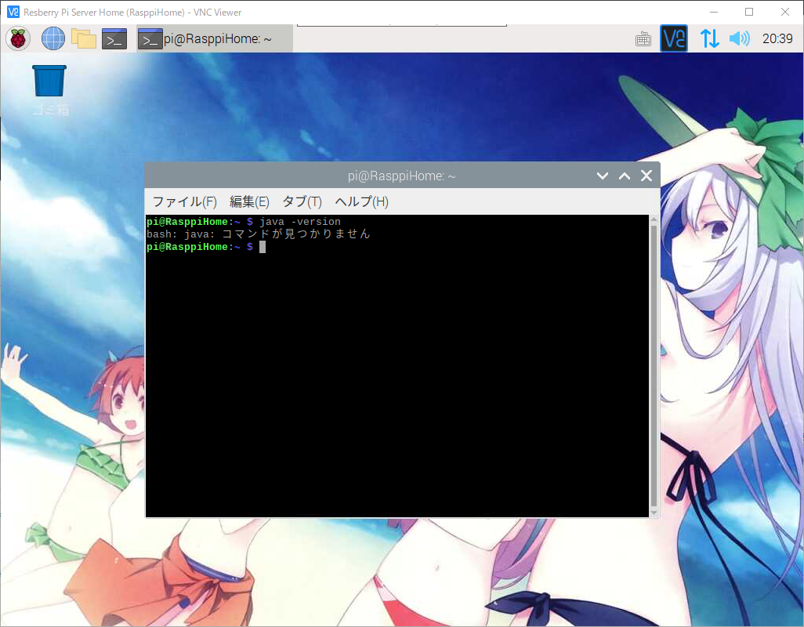
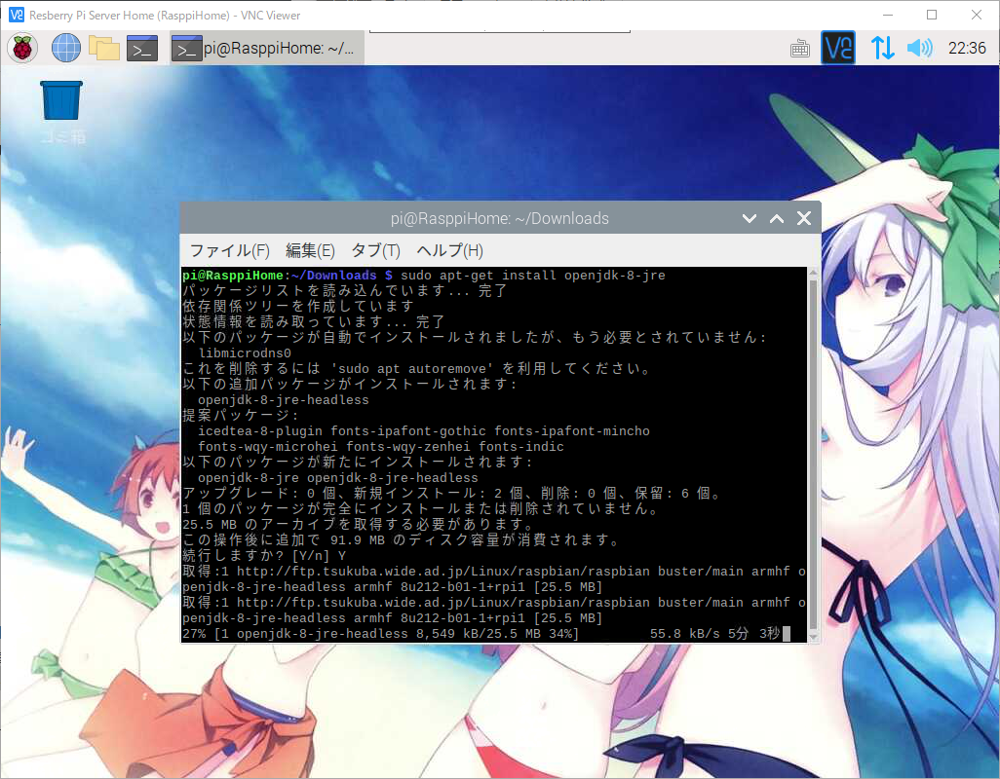

라즈베리파이 또는 리눅스에서 OpenJDK 설치하기
라즈베리파이 또는 리눅스에서 OpenJDK 설치하기
안녕하세요.
이번에 소개할 내용은 라즈베리파이 또는 리눅스에서 OpenJDK 설치하기 입니다.
라즈베리파이를 처음 설치하시면 일단 기본적으로 JDK가 설치가 되어있지 않기때문에
JAVA개발 또는 Tomcat과 연동후 홈페이지를 운영하실 분들은 OpenJDK를 수동으로
설치를 해주셔야만 합니다.
라즈베리파이 OpenJDK 11 설치하기
우선 라즈베리파이를 VNC를 이용해 접속후 터미널을 실행해 주세요.
우선 자바가 설치되어 있는지 확인을 위해 아래의 명령어를 터미널에 입력해 주세요.
1 | $ java -version |

명령어를 입력후 위와같이 알수없는 명령어라고 나오면 JAVA관련 패키지가 설치가 되어있지 않은것 입니다.
그럼 설치를 위해 아래의 명령어를 입력해 주세요.
1 | # 자동 인스톨 프로그램을 최신화 합니다. |
가지고 계신 라즈베리파이의 성능에 따라서 업데이트 시간에 조금 차이가 있을수 있겠습니다.
OpenJDK설치가 완료 되었습니다만
위와 같이 에러가 나오면 라즈베리파이의 cpu코어가 최신의 JDK를 실행을 할수가 없는것 입니다.
그래도 설치가 제대로 되었는지 확인을 해야하기에 아래의 명령어를 입력해 주세요.
1 | # 자바 버전확인 |
터미널에 자바버전이 출력이 되시면 정상적으로 설치가 되신것 입니다.
그래도 구형 라즈베리파이를 사용하시는 분들이 좌절하지 않으시도록
어떻게하면 구형 라즈베리파이에서도 JDK를 사용할수 있는지 해보도록 하겠습니다.
1 | # 아래의 명령어를 터미널에 입력해 주세요. |

명령어를 입력하시면 OpenJDK8버전을 설치하기 시작 합니다.
이번에는 아무런 에러가 없이 무사히 설치가 완료 되었습니다.
설치가 완료되었으면 기존 기본으로 설치한 OpenJDK의 버전을 변경하도록 하겠습니다.
1 | # 설치가 완료되셨으면 아래의 명령어를 입력해 주세요. |
위와같은 화면이 나오시게 되면 기본으로 사용하실 OpenJDK 버전을 변경하실수 있습니다.
그럼 새롭게 설치한 OpenJDK8버전인 2를 입력하시기 바랍니다.
그러면 설정이 변경이 되었습니다.
그러면 이제 자바가 정상 설치와 버전변경이 되었는지 확인을 해보도록 하겠습니다.
아래의 명령어를 입력해 주세요.
1 | # 자바 버전확인 |
OpenJDK버전도 정상적으로 출력되신것을 확인 하실수 있습니다.
이것으로 라즈베리파이 또는 리눅스에서 OpenJDK 설치하기를 해보았습니다.